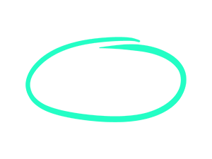

Het Idee
De Gemeente Amsterdam zet zich in voor een duurzame toekomst en stimuleert het scheiden van afval. Inwoners worden aangemoedigd om thuis afval zoals papier, plastic, glas, en gft (groente-, fruit- en tuinafval) apart te houden. Zo wordt hergebruik makkelijker, en kunnen waardevolle materialen opnieuw worden gebruikt. Door de hele stad staan ondergrondse containers waar gescheiden afval ingeleverd kan worden, wat niet alleen het milieu helpt, maar ook zwerfafval op straat vermindert.

Het gft-afval kan apart worden ingeleverd. Dit afval wordt verwerkt tot compost (plantaardige mest), wat weer gebruikt kan worden in de landbouw en voor tuinen. Daarnaast geeft de gemeente voorlichting en organiseert ze campagnes om inwoners, scholen en bedrijven bewust te maken van het belang van afval scheiden.

Amsterdam heeft als doel om in 2050 een afval vrije stad te zijn. Dit betekent dat alles wat opnieuw gebruikt of gerecycled kan worden, niet bij het restafval terechtkomt. Ook bedrijven worden aangespoord om mee te doen met afvalscheiding, zodat de hele stad samen werkt aan een schonere en duurzamere toekomst.
